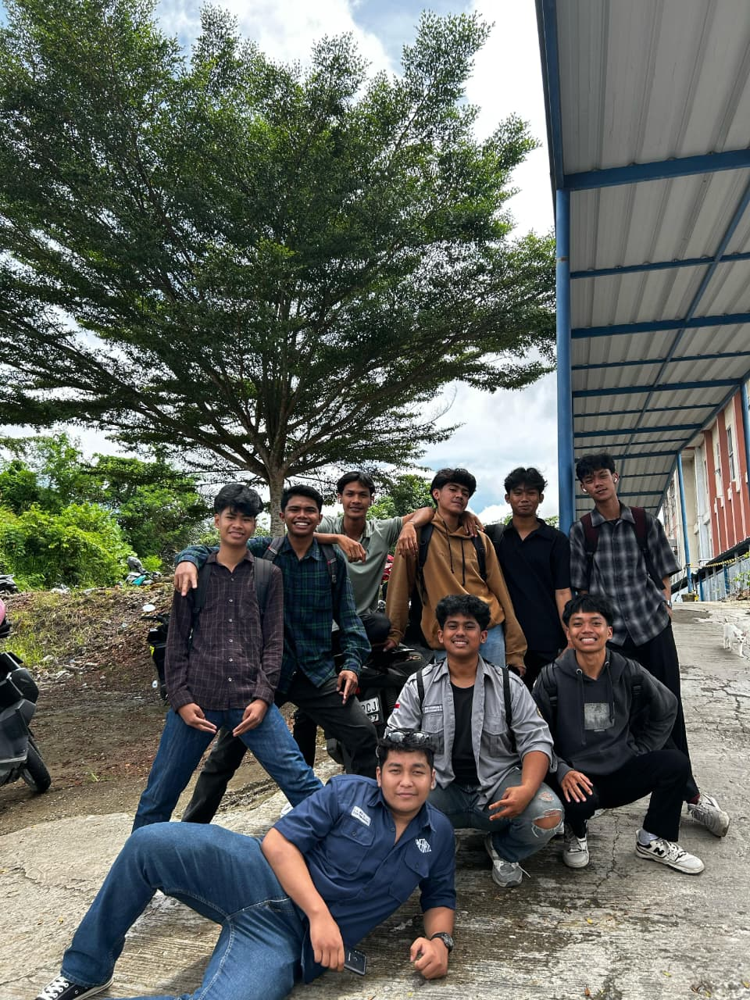
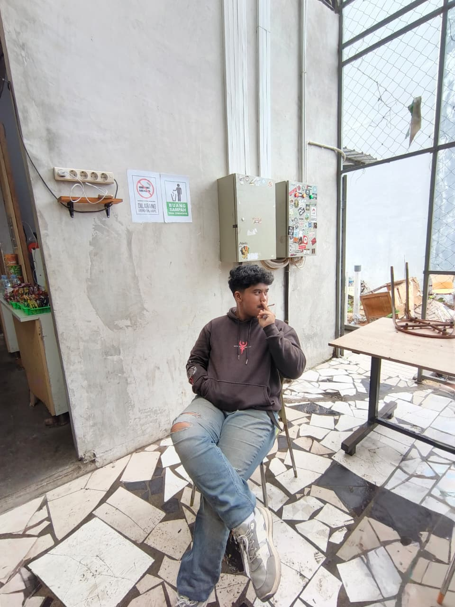
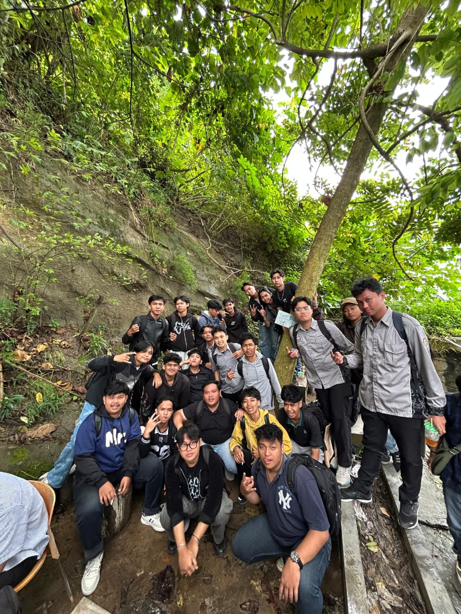
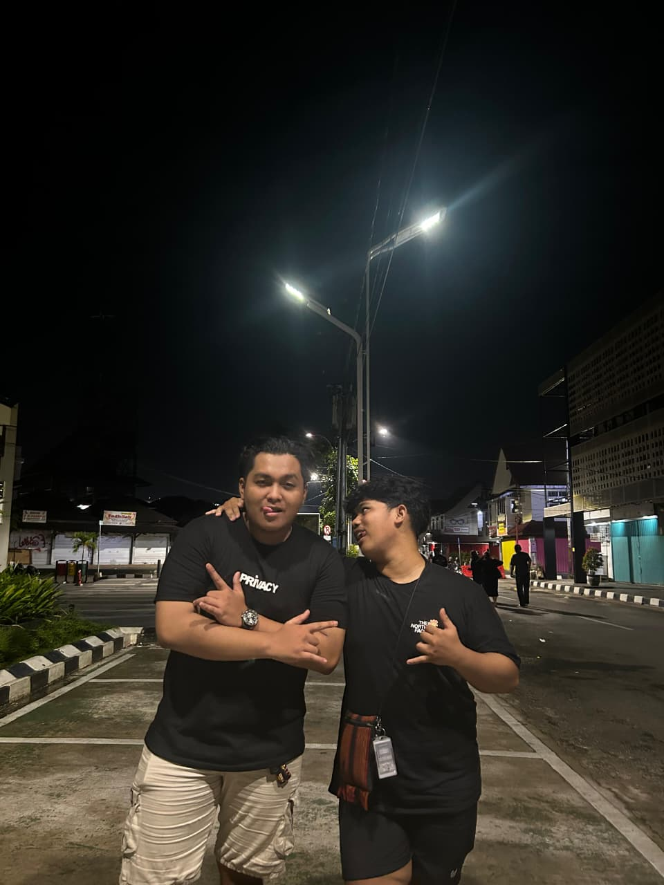

POSTS
13K Likes | 6.2K Comments

5.9K Likes | 1.5K Comments

12.3K Likes | 3.1K Comments

12K Likes | 4.7K Comments

24K Likes | 12K Comments

8.5K Likes | 1.1K Comments
11K Likes | 2.3K Comments

6.3K Likes | 1.2K Comments

14K Likes | 3.5K Comments

4.8K Likes | 312 Comments
3.2K Likes | 250 Comments

5.2K Likes | 320 Comments